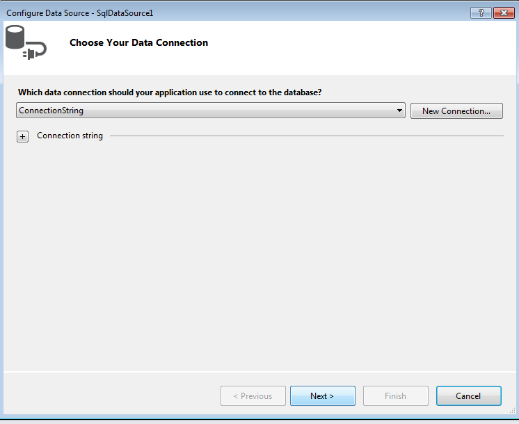
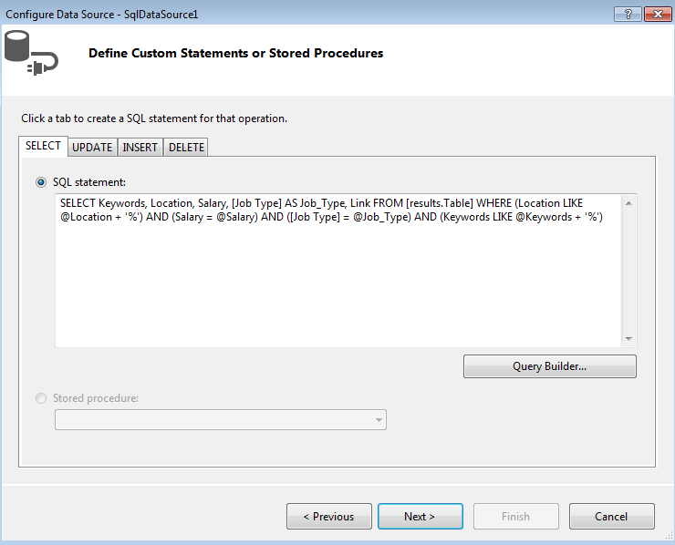
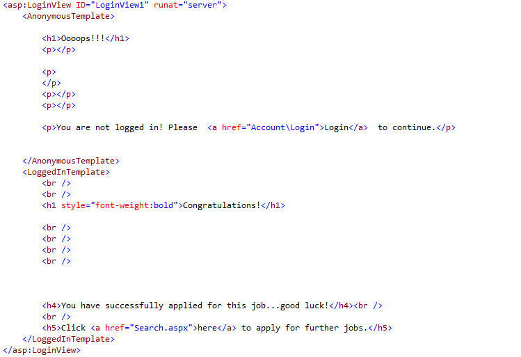

1.To implement the first user story(the Job Search), we decided to create a new page named "Search.aspx" with the master page template furnished by Visual Studio. Then we created two textboxes to display the fields KEYWORDS and LOCATION, and then two dropdown lists to display the fields SALARY and JOB TYPE. Next we created a ListView control to display the results of the search and a DataSource control.We configured the DataSource control setting up first the data connection(as shown below)

and then the query string.

At this point we set up the layout of the ListView control to perform a professional display of the search results and complete the user story.
4.To implement the fourth user story(the Job Apply), we decided to create a new page named "Apply.aspx" with the master page template. When a logged user clicks on the Apply link of a particular job in the Search page, the success message will be displayed as implemented between the LoggedInTemplate tags. Otherwise the user will be asked to login to the website, as shown between the AnonymousTemplate tags.
